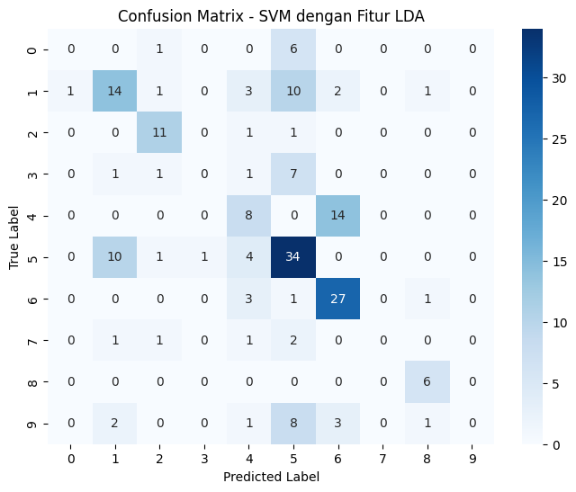
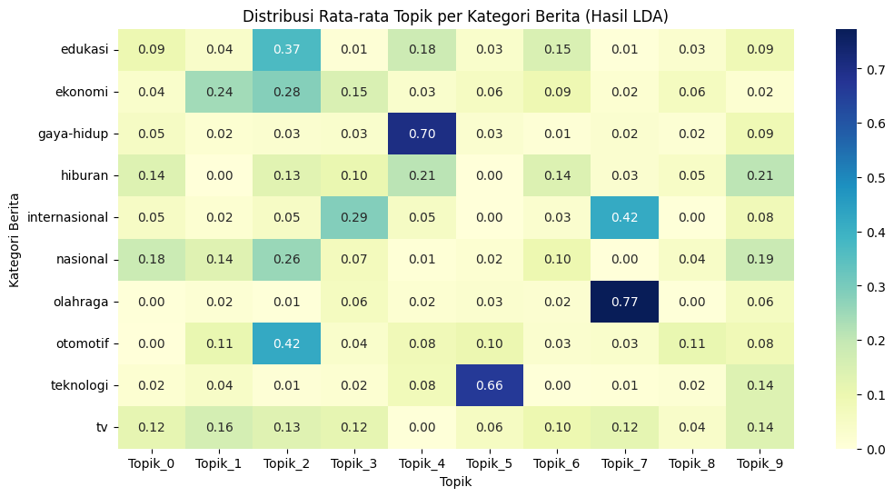
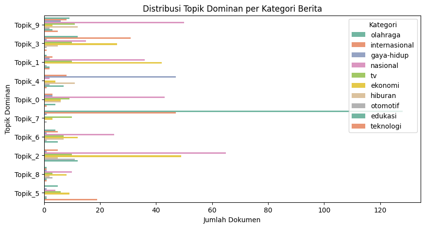
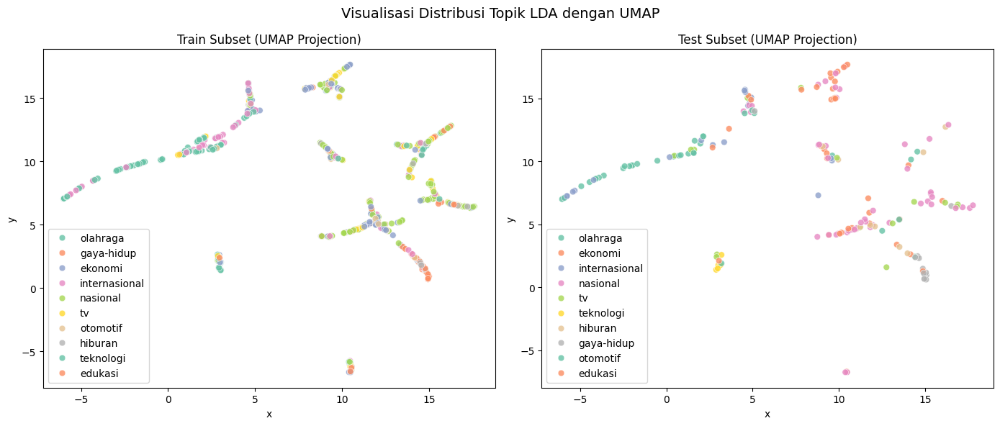

Klasifikasi dengan ektraksi fitur menggunakan Latent Dirichlet Allocation#
!pip install gensim
Requirement already satisfied: gensim in /usr/local/lib/python3.12/dist-packages (4.3.3)
Requirement already satisfied: numpy<2.0,>=1.18.5 in /usr/local/lib/python3.12/dist-packages (from gensim) (1.26.4)
Requirement already satisfied: scipy<1.14.0,>=1.7.0 in /usr/local/lib/python3.12/dist-packages (from gensim) (1.13.1)
Requirement already satisfied: smart-open>=1.8.1 in /usr/local/lib/python3.12/dist-packages (from gensim) (7.3.1)
Requirement already satisfied: wrapt in /usr/local/lib/python3.12/dist-packages (from smart-open>=1.8.1->gensim) (1.17.3)
!pip install gensim matplotlib seaborn scikit-learn pandas numpy
Requirement already satisfied: gensim in /usr/local/lib/python3.12/dist-packages (4.3.3)
Requirement already satisfied: matplotlib in /usr/local/lib/python3.12/dist-packages (3.10.0)
Requirement already satisfied: seaborn in /usr/local/lib/python3.12/dist-packages (0.13.2)
Requirement already satisfied: scikit-learn in /usr/local/lib/python3.12/dist-packages (1.6.1)
Requirement already satisfied: pandas in /usr/local/lib/python3.12/dist-packages (2.2.2)
Requirement already satisfied: numpy in /usr/local/lib/python3.12/dist-packages (1.26.4)
Requirement already satisfied: scipy<1.14.0,>=1.7.0 in /usr/local/lib/python3.12/dist-packages (from gensim) (1.13.1)
Requirement already satisfied: smart-open>=1.8.1 in /usr/local/lib/python3.12/dist-packages (from gensim) (7.3.1)
Requirement already satisfied: contourpy>=1.0.1 in /usr/local/lib/python3.12/dist-packages (from matplotlib) (1.3.3)
Requirement already satisfied: cycler>=0.10 in /usr/local/lib/python3.12/dist-packages (from matplotlib) (0.12.1)
Requirement already satisfied: fonttools>=4.22.0 in /usr/local/lib/python3.12/dist-packages (from matplotlib) (4.60.1)
Requirement already satisfied: kiwisolver>=1.3.1 in /usr/local/lib/python3.12/dist-packages (from matplotlib) (1.4.9)
Requirement already satisfied: packaging>=20.0 in /usr/local/lib/python3.12/dist-packages (from matplotlib) (25.0)
Requirement already satisfied: pillow>=8 in /usr/local/lib/python3.12/dist-packages (from matplotlib) (11.3.0)
Requirement already satisfied: pyparsing>=2.3.1 in /usr/local/lib/python3.12/dist-packages (from matplotlib) (3.2.5)
Requirement already satisfied: python-dateutil>=2.7 in /usr/local/lib/python3.12/dist-packages (from matplotlib) (2.9.0.post0)
Requirement already satisfied: joblib>=1.2.0 in /usr/local/lib/python3.12/dist-packages (from scikit-learn) (1.5.2)
Requirement already satisfied: threadpoolctl>=3.1.0 in /usr/local/lib/python3.12/dist-packages (from scikit-learn) (3.6.0)
Requirement already satisfied: pytz>=2020.1 in /usr/local/lib/python3.12/dist-packages (from pandas) (2025.2)
Requirement already satisfied: tzdata>=2022.7 in /usr/local/lib/python3.12/dist-packages (from pandas) (2025.2)
Requirement already satisfied: six>=1.5 in /usr/local/lib/python3.12/dist-packages (from python-dateutil>=2.7->matplotlib) (1.17.0)
Requirement already satisfied: wrapt in /usr/local/lib/python3.12/dist-packages (from smart-open>=1.8.1->gensim) (1.17.3)
!pip install umap-learn
Requirement already satisfied: umap-learn in /usr/local/lib/python3.12/dist-packages (0.5.9.post2)
Requirement already satisfied: numpy>=1.23 in /usr/local/lib/python3.12/dist-packages (from umap-learn) (1.26.4)
Requirement already satisfied: scipy>=1.3.1 in /usr/local/lib/python3.12/dist-packages (from umap-learn) (1.13.1)
Requirement already satisfied: scikit-learn>=1.6 in /usr/local/lib/python3.12/dist-packages (from umap-learn) (1.6.1)
Requirement already satisfied: numba>=0.51.2 in /usr/local/lib/python3.12/dist-packages (from umap-learn) (0.60.0)
Requirement already satisfied: pynndescent>=0.5 in /usr/local/lib/python3.12/dist-packages (from umap-learn) (0.5.13)
Requirement already satisfied: tqdm in /usr/local/lib/python3.12/dist-packages (from umap-learn) (4.67.1)
Requirement already satisfied: llvmlite<0.44,>=0.43.0dev0 in /usr/local/lib/python3.12/dist-packages (from numba>=0.51.2->umap-learn) (0.43.0)
Requirement already satisfied: joblib>=0.11 in /usr/local/lib/python3.12/dist-packages (from pynndescent>=0.5->umap-learn) (1.5.2)
Requirement already satisfied: threadpoolctl>=3.1.0 in /usr/local/lib/python3.12/dist-packages (from scikit-learn>=1.6->umap-learn) (3.6.0)
import pandas as pd
import numpy as np
import gensim
from gensim import corpora, models
from gensim.models.ldamodel import LdaModel
from sklearn.model_selection import train_test_split
from sklearn.svm import SVC
from sklearn.metrics import accuracy_score, classification_report, confusion_matrix
import matplotlib.pyplot as plt
import seaborn as sns
from google.colab import drive
drive.mount('/content/drive')
Drive already mounted at /content/drive; to attempt to forcibly remount, call drive.mount("/content/drive", force_remount=True).
# Baca data
df_path = "/content/drive/MyDrive/PPW/output/berita_cnn_tokens.csv"
df = pd.read_csv(df_path)
# Cek kolom
df.head()
| id_berita | judul_berita | isi_berita | kategori_berita | cleaned | no_stopwords | stemmed | tokens | |
|---|---|---|---|---|---|---|---|---|
| 0 | 1 | Dorong Suporter, Andre Onana Dilempar BotolOla... | Kiper Manchester UnitedAndre Onanadilempar bot... | olahraga | kiper manchester unitedandre onanadilempar bot... | kiper manchester unitedandre onanadilempar bot... | kiper manchester unitedandre onanadilempar bot... | ['kiper', 'manchester', 'unitedandre', 'onanad... |
| 1 | 2 | Militer Nepal Batasi Aktivitas Pascademo Gulin... | Militer Nepalmengambil kembali kendali atas Ka... | internasional | militer nepalmengambil kembali kendali atas ka... | militer nepalmengambil kendali atas kathmandu ... | militer nepalmengambil kendali atas kathmandu ... | ['militer', 'nepalmengambil', 'kendali', 'atas... |
| 2 | 3 | Dua Helikopter Disiagakan Selama MotoGP Mandal... | Basarnas akan menyiapkan dan menyiagakan dua h... | olahraga | basarnas akan menyiapkan dan menyiagakan dua h... | basarnas menyiapkan menyiagakan helikopter eva... | basarnas siap siaga helikopter evakuasi medis ... | ['basarnas', 'siap', 'siaga', 'helikopter', 'e... |
| 3 | 4 | Lari, Rahasia Hidup Sehat untuk Tingkatkan Pro... | Tingginya tuntutan pekerjaan di era yang serba... | gaya-hidup | tingginya tuntutan pekerjaan di era yang serba... | tingginya tuntutan pekerjaan era serba cepat s... | tinggi tuntut kerja era serba cepat seringkali... | ['tinggi', 'tuntut', 'kerja', 'era', 'serba', ... |
| 4 | 5 | Lokasi Titik Jatuh Helikopter di Mimika Ditemu... | Kepala Badan Nasional Pencarian dan Pertolonga... | nasional | kepala badan nasional pencarian dan pertolonga... | kepala badan nasional pencarian pertolongan ba... | kepala badan nasional cari tolong basarnas mar... | ['kepala', 'badan', 'nasional', 'cari', 'tolon... |
df[['kategori_berita', 'stemmed']].head()
| kategori_berita | stemmed | |
|---|---|---|
| 0 | olahraga | kiper manchester unitedandre onanadilempar bot... |
| 1 | internasional | militer nepalmengambil kendali atas kathmandu ... |
| 2 | olahraga | basarnas siap siaga helikopter evakuasi medis ... |
| 3 | gaya-hidup | tinggi tuntut kerja era serba cepat seringkali... |
| 4 | nasional | kepala badan nasional cari tolong basarnas mar... |
# Melihat daftar kategori unik
print(df['kategori_berita'].unique())
# Menghitung jumlah kategori unik
print("Jumlah kategori:", df['kategori_berita'].nunique())
# Kalau mau lihat jumlah data per kategori
print(df['kategori_berita'].value_counts())
['olahraga' 'internasional' 'gaya-hidup' 'nasional' 'tv' 'ekonomi'
'hiburan' 'otomotif' 'edukasi' 'teknologi']
Jumlah kategori: 10
kategori_berita
nasional 250
ekonomi 162
olahraga 160
internasional 111
tv 76
gaya-hidup 64
hiburan 48
edukasi 35
teknologi 30
otomotif 23
Name: count, dtype: int64
Siapkan data untuk LDA#
# Ubah string list token menjadi list Python
import ast
df['tokens'] = df['tokens'].apply(lambda x: ast.literal_eval(x) if isinstance(x, str) else x)
# Buat kamus (dictionary) dan corpus untuk Gensim
dictionary = corpora.Dictionary(df['tokens'])
corpus = [dictionary.doc2bow(text) for text in df['tokens']]
print("Jumlah dokumen:", len(corpus))
print("Jumlah kata unik:", len(dictionary))
Jumlah dokumen: 959
Jumlah kata unik: 14586
Training Model LDA#
# Tentukan jumlah topik (bisa kamu sesuaikan)
num_topics = 10
lda_model = LdaModel(
corpus=corpus,
id2word=dictionary,
num_topics=num_topics,
random_state=42,
passes=10,
alpha='auto'
)
for i, topic in lda_model.show_topics(num_topics=num_topics, num_words=10, formatted=False):
print(f"\nTopik {i+1}:")
print(", ".join([word for word, prob in topic]))
Topik 1:
orang, sebut, korban, laku, kata, temu, jadi, jalan, warga, satu
Topik 2:
menteri, purbaya, jadi, haji, uang, prabowo, ganti, presiden, ekonomi, sebut
Topik 3:
rp, tahun, sebut, jadi, lalu, kerja, kata, anggota, juta, dpr
Topik 4:
menteri, jadi, presiden, jabat, sri, nepal, kata, perintah, prabowo, mulyani
Topik 5:
lebih, jadi, makan, tubuh, sehat, konsumsi, baik, buat, banyak, orang
Topik 6:
iphone, apple, baru, lebih, marquez, jadi, hadir, besar, pro, saham
Topik 7:
tni, negara, kata, hukum, jadi, laku, sebut, indonesia, ferry, persen
Topik 8:
indonesia, main, serang, jadi, israel, u, timnas, laga, piala, lebanon
Topik 9:
shell, jadi, kata, usaha, rp, umkm, sebut, indonesia, harga, laku
Topik 10:
kata, sebut, jadi, laku, orang, korban, ada, tahun, jalan, lalu
Ubah hasil LDA menjadi fitur numerik#
def get_topic_distribution(lda_model, corpus):
topic_features = []
for doc in corpus:
topic_dist = [0] * lda_model.num_topics
for topic_num, prob in lda_model.get_document_topics(doc):
topic_dist[topic_num] = prob
topic_features.append(topic_dist)
return np.array(topic_features)
X_lda = get_topic_distribution(lda_model, corpus)
y = df['kategori_berita']
print("Ekstraksi fitur LDA selesai.")
X_lda.shape
Ekstraksi fitur LDA selesai.
(959, 10)
# Gabungkan hasil LDA dengan kategori berita
df_lda = pd.DataFrame(X_lda, columns=[f"Topik_{i+1}" for i in range(X_lda.shape[1])])
df_lda['kategori_berita'] = df['kategori_berita'].values
# Lihat 5 baris pertama
df_lda.head()
| Topik_1 | Topik_2 | Topik_3 | Topik_4 | Topik_5 | Topik_6 | Topik_7 | Topik_8 | Topik_9 | Topik_10 | kategori_berita | |
|---|---|---|---|---|---|---|---|---|---|---|---|
| 0 | 0.000000 | 0.000000 | 0.000000 | 0.000000 | 0.000000 | 0.000000 | 0.0 | 0.425846 | 0.0 | 0.572415 | olahraga |
| 1 | 0.000000 | 0.151152 | 0.000000 | 0.847508 | 0.000000 | 0.000000 | 0.0 | 0.000000 | 0.0 | 0.000000 | internasional |
| 2 | 0.234866 | 0.568305 | 0.000000 | 0.000000 | 0.000000 | 0.186865 | 0.0 | 0.000000 | 0.0 | 0.000000 | olahraga |
| 3 | 0.069962 | 0.000000 | 0.000000 | 0.000000 | 0.922891 | 0.000000 | 0.0 | 0.000000 | 0.0 | 0.000000 | gaya-hidup |
| 4 | 0.398576 | 0.000000 | 0.247152 | 0.000000 | 0.353000 | 0.000000 | 0.0 | 0.000000 | 0.0 | 0.000000 | nasional |
Bagi Data Train dan Test#
X_train, X_test, y_train, y_test = train_test_split(
X_lda, y, test_size=0.2, random_state=42, stratify=y
)
print(f"Jumlah data latih: {len(X_train)}, data uji: {len(X_test)}")
Jumlah data latih: 767, data uji: 192
Training Model SVM#
svm_model = SVC(kernel='linear', C=1, random_state=42)
svm_model.fit(X_train, y_train)
print("Model SVM berhasil dilatih dengan fitur hasil ekstraksi LDA.")
Model SVM berhasil dilatih dengan fitur hasil ekstraksi LDA.
Evaluasi Model#
y_pred = svm_model.predict(X_test)
print("Akurasi Model:", accuracy_score(y_test, y_pred))
print("\nLaporan Klasifikasi:\n", classification_report(y_test, y_pred))
Akurasi Model: 0.5208333333333334
Laporan Klasifikasi:
precision recall f1-score support
edukasi 0.00 0.00 0.00 7
ekonomi 0.50 0.44 0.47 32
gaya-hidup 0.69 0.85 0.76 13
hiburan 0.00 0.00 0.00 10
internasional 0.36 0.36 0.36 22
nasional 0.49 0.68 0.57 50
olahraga 0.59 0.84 0.69 32
otomotif 0.00 0.00 0.00 5
teknologi 0.67 1.00 0.80 6
tv 0.00 0.00 0.00 15
accuracy 0.52 192
macro avg 0.33 0.42 0.37 192
weighted avg 0.42 0.52 0.46 192
/usr/local/lib/python3.12/dist-packages/sklearn/metrics/_classification.py:1565: UndefinedMetricWarning: Precision is ill-defined and being set to 0.0 in labels with no predicted samples. Use `zero_division` parameter to control this behavior.
_warn_prf(average, modifier, f"{metric.capitalize()} is", len(result))
/usr/local/lib/python3.12/dist-packages/sklearn/metrics/_classification.py:1565: UndefinedMetricWarning: Precision is ill-defined and being set to 0.0 in labels with no predicted samples. Use `zero_division` parameter to control this behavior.
_warn_prf(average, modifier, f"{metric.capitalize()} is", len(result))
/usr/local/lib/python3.12/dist-packages/sklearn/metrics/_classification.py:1565: UndefinedMetricWarning: Precision is ill-defined and being set to 0.0 in labels with no predicted samples. Use `zero_division` parameter to control this behavior.
_warn_prf(average, modifier, f"{metric.capitalize()} is", len(result))
Visualisasi Confusion Matrix#
plt.figure(figsize=(8,6))
sns.heatmap(confusion_matrix(y_test, y_pred), annot=True, fmt='d', cmap='Blues')
plt.title('Confusion Matrix - SVM dengan Fitur LDA')
plt.xlabel('Predicted Label')
plt.ylabel('True Label')
plt.show()

Distribusi Topik per Kategori#
topic_df = pd.DataFrame(X_lda, columns=[f"Topik_{i}" for i in range(num_topics)])
topic_df["Kategori"] = y.values
topic_by_category = topic_df.groupby("Kategori").mean()
plt.figure(figsize=(12,6))
sns.heatmap(topic_by_category, cmap="YlGnBu", annot=True, fmt=".2f")
plt.title("Distribusi Rata-rata Topik per Kategori Berita (Hasil LDA)")
plt.xlabel("Topik")
plt.ylabel("Kategori Berita")
plt.show()

Topik Dominan per Dokumen#
topic_df["Topik_Dominan"] = topic_df[[f"Topik_{i}" for i in range(num_topics)]].idxmax(axis=1)
plt.figure(figsize=(10,5))
sns.countplot(y="Topik_Dominan", hue="Kategori", data=topic_df, palette="Set2")
plt.title("Distribusi Topik Dominan per Kategori Berita")
plt.xlabel("Jumlah Dokumen")
plt.ylabel("Topik Dominan")
plt.legend(title="Kategori")
plt.show()

Proyeksi 2D Data LDA#
import umap
# Buat model UMAP
umap_model = umap.UMAP(n_neighbors=15, n_components=2, random_state=42)
# Fit-transform untuk data training dan test
X_train_2d = umap_model.fit_transform(X_train)
X_test_2d = umap_model.transform(X_test)
# Simpan hasil proyeksi ke DataFrame
train_umap = pd.DataFrame(X_train_2d, columns=['x', 'y'])
train_umap['Kategori'] = y_train.values
test_umap = pd.DataFrame(X_test_2d, columns=['x', 'y'])
test_umap['Kategori'] = y_test.values
/usr/local/lib/python3.12/dist-packages/umap/umap_.py:1952: UserWarning: n_jobs value 1 overridden to 1 by setting random_state. Use no seed for parallelism.
warn(
Visualisasi#
plt.figure(figsize=(14,6))
# Plot subset training
plt.subplot(1, 2, 1)
sns.scatterplot(
data=train_umap,
x='x', y='y',
hue='Kategori',
palette='Set2',
s=40,
alpha=0.8
)
plt.title('Train Subset (UMAP Projection)')
plt.legend(loc='best')
# Plot subset testing
plt.subplot(1, 2, 2)
sns.scatterplot(
data=test_umap,
x='x', y='y',
hue='Kategori',
palette='Set2',
s=40,
alpha=0.8
)
plt.title('Test Subset (UMAP Projection)')
plt.legend(loc='best')
plt.suptitle('Visualisasi Distribusi Topik LDA dengan UMAP', fontsize=14)
plt.tight_layout()
plt.show()
